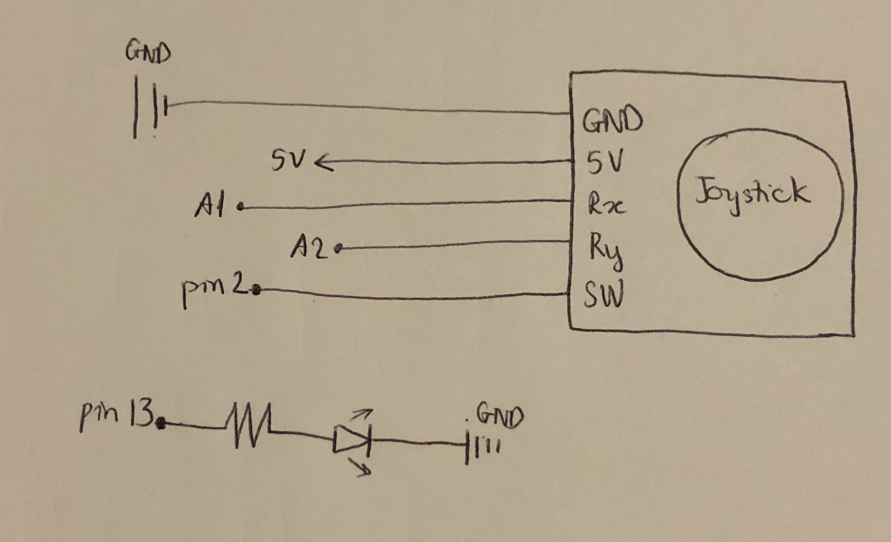
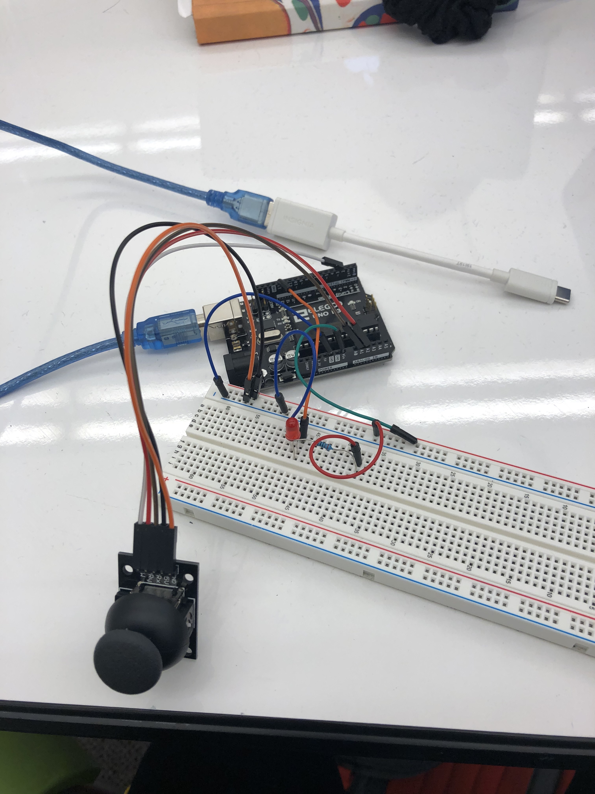
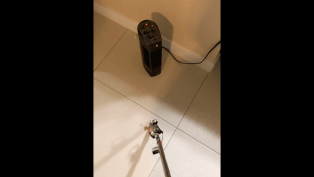

Final Project: Smart Blind Stick (SBS)

We’re HCDE; we design with other people in mind.
For the final project, I want to make something useful for people, so I decided to make a smart blind stick. With this design, people don't need to buy a fancy blind stick, which is very expensive; they can attach this circuit into any stick they want. A smart stick that helps people who are blind or visually impaired. It allows users to get to their destinations without colliding with obstacles.
Concept
List of Materials
Arduino Ultrasonic sensor 9V battery and connector Active buzzer Red LED 220V resistor Wires Tape A long stickTo find the resistance of the LED, I used Ohm's Law: Voltage(Volts) = Current(Amperes) x Resistance (Ohms) The voltage in this formula is the power of my laptop, which is 5V. First, I need to find the voltage of the resistance: V(total) = V(red LED) + V(resistance) <=> 5 = 1.8+ V(resistance) => V(resistance) = 5-2.8 = 3.2V Apply it to the formula, V = I x R <=> 3.2 = 0.02 x R => R(resistance) = 3.2/0.02 = 160 Ohms Because we don't have 160 Ohms resistance in the kit, so I used the 220 Ohms instead, and it's closest to 160!
Here is my schematic: 
The firmware (as a code snippet):

My circuit and the operation:  